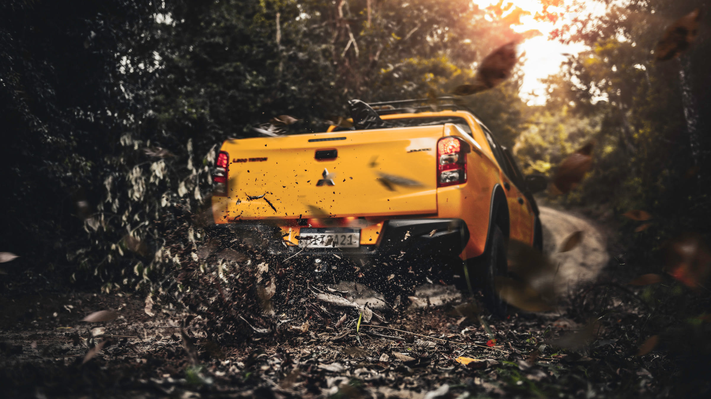
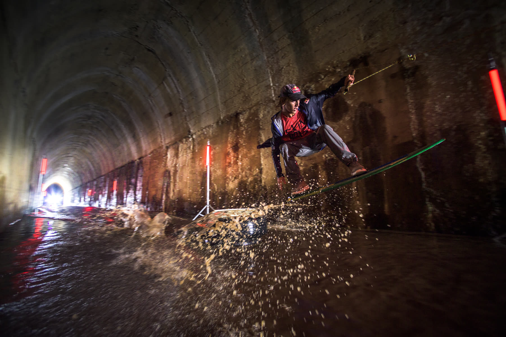
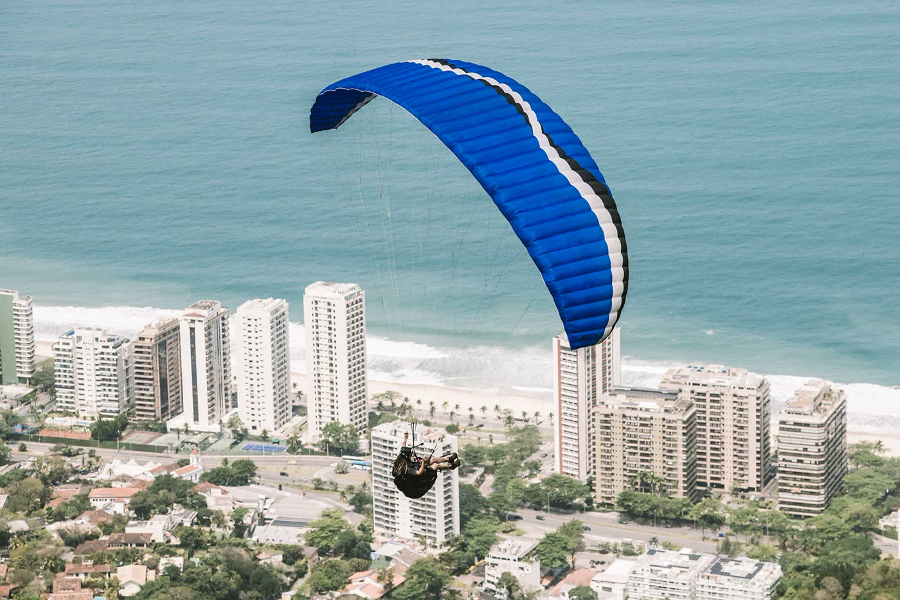
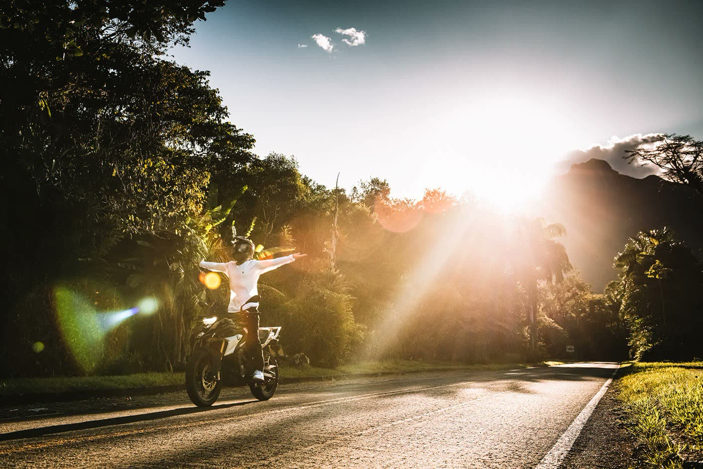
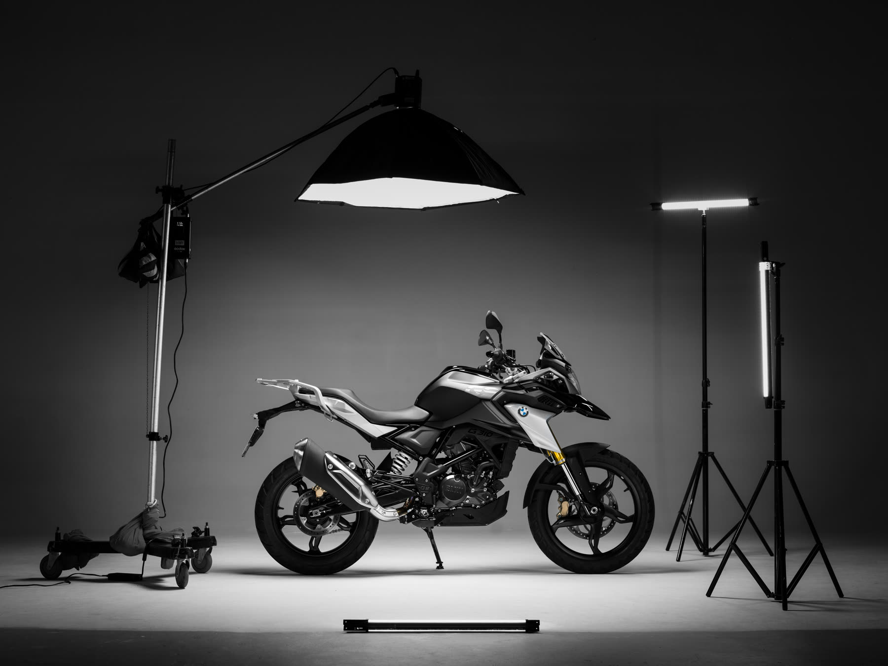
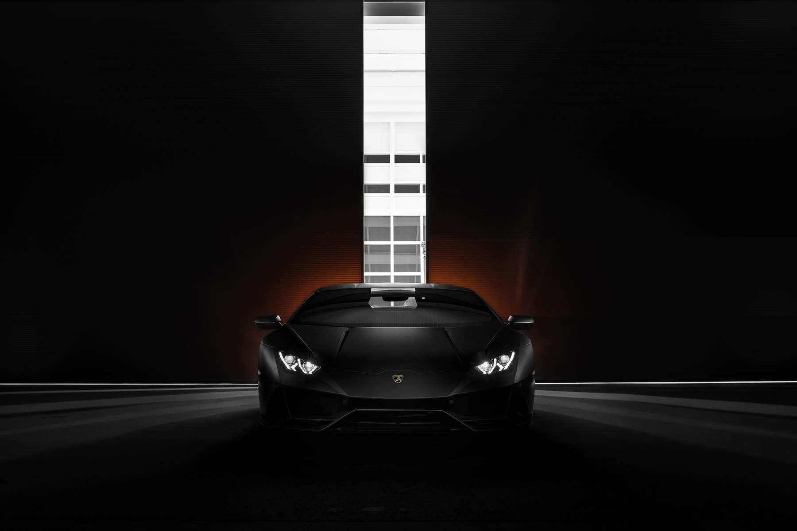
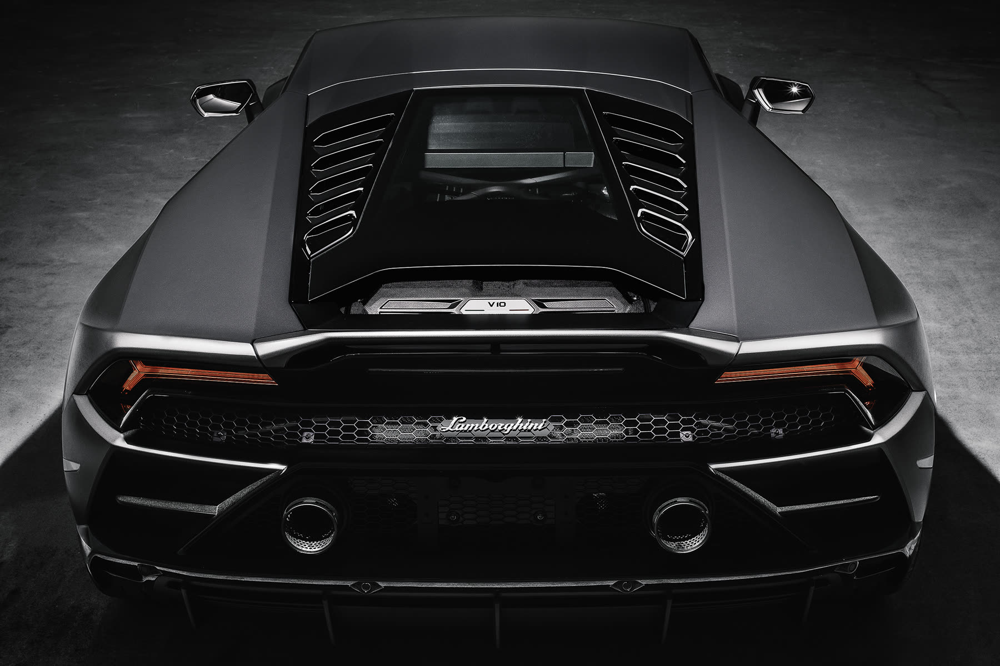
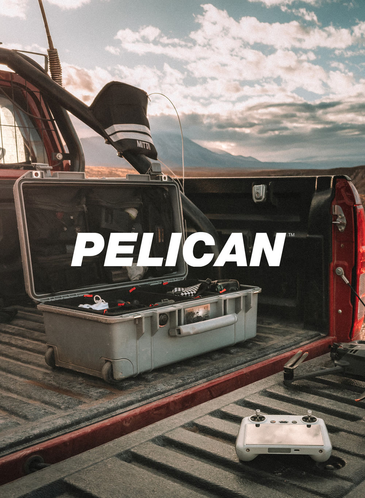

Media kit 2026
Photography and content for brands that go far.
Commercial photographer and creator in the automotive, sports, off-road, outdoor and lifestyle worlds.
@pablovaz · pablovaz.com · vazphotography.com


Who
Pablo Vaz
Commercial photographer for over two decades, with campaigns for Volvo Trucks, BMW Motorrad, Mitsubishi, ESPN, Yamaha, Can-Am, Budweiser and Stella Artois.
He started shooting skateboarding on the streets, where he learned motion, timing and natural light. Today he brings that eye to the road as a brand ambassador, creating authentic content born from real use of the products.
- 23years in advertising photography
- 6brands as ambassador
- BR + worldnational and international work

Signature project
Reclaiming the Fábio Rego Tunnel
I found the tunnel, came up with the idea and took it to Mitsubishi. It became the launch film for the #4you4challenge platform: Lucas Fink, two-time skimboarding world champion, towed by an L200 Triton through a 900-meter flooded railway tunnel in Jaguariaíva, Paraná, Brazil.
- 1.4Mviews on Mitsubishi Brazil’s official YouTube channel
- 3films: trailer, film and director’s cut
- 900 mof flooded tunnel, with up to 1 m of water
- Client
- Mitsubishi Motors Brazil
- Agency
- Tech and Soul
- Production
- Sector One
- Concept
- Pablo Vaz and Sector One
- Year
- 2021
Press: AdNews, Cidade Marketing, ABC da Comunicação, Marcas pelo Mundo.
Project
BMW Motorrad G 310 GS
More than 10 films and many photo series produced with the G 310 GS. Featured here: paragliding in Rio de Janeiro, beach and surf, the open road and a studio shoot of the Triple Black. I also created the brand’s photo exhibition at Pátio Batel, Curitiba.
- 781Kviews of the launch film “Chegou a nova BMW G 310 GS” on BMW Motorrad Brazil’s official channel
- 10+films and many photo series produced with the G 310 GS
- 2023photo exhibition “Uma história, incontáveis memórias” at Pátio Batel




Project
Lamborghini Huracán Evo with Godox
A Huracán Evo, a helicopter and a hangar, lit with Godox AD300Pro flashes. The photos and making of show the gear in real use, the way the brand wants to see it. Godox also published my film “Skateboarding on Fire” on its global channel.
- Brand
- Godox
- Car
- Lamborghini Huracán Evo
- Gear
- Godox AD300Pro
- Delivery
- photos, making of and YouTube videos




Reach
An audience that follows the road.
Instagram @pablovaz
54.4K
followers
- 944Kviews in 90 days
- 147Kaccounts reached in 90 days
- 28.5Kinteractions in 90 days
of views come from people who do not follow me yet
The content reaches new people, not just the base.YouTube
4.7K subscribers
401K views
TikTok @pablovazfoto
17K views on the video with Mitsubishi, Yokohama and biO2
Official data from Instagram Insights, YouTube Data API and TikTok Studio, collected on November 4, 2026. Instagram: last 90 days.
Audience
Who is watching.
Age range
Three in four followers are between 25 and 44.
Countries
Cities
Languages
Brands
Ambassador for brands that live on the road.
Ambassador





Brands I have worked with


Formats
What I deliver.
- 01
Reels and posts
Native Instagram feed content, with the product in real use.
- 02
Stories
Behind the scenes, routine and direct calls with a link to the brand.
- 03
YouTube and TikTok
Review, expedition and making-of videos.
- 04
Photography for the brand
Campaign, catalog and social images, with agreed usage rights.
- 05
Events and launches
Coverage and presence at test drives, fairs and activations.
- 06
Long-term ambassador
Ongoing partnership, in daily life and on the road. With HB, 15 years together since 2011.
Rates on request. Packages built for each campaign.
Let’s create together?
instagram.com/pablovaz · youtube.com/pablovaz · tiktok.com/@pablovazfoto · pablovaz.com · vazphotography.com